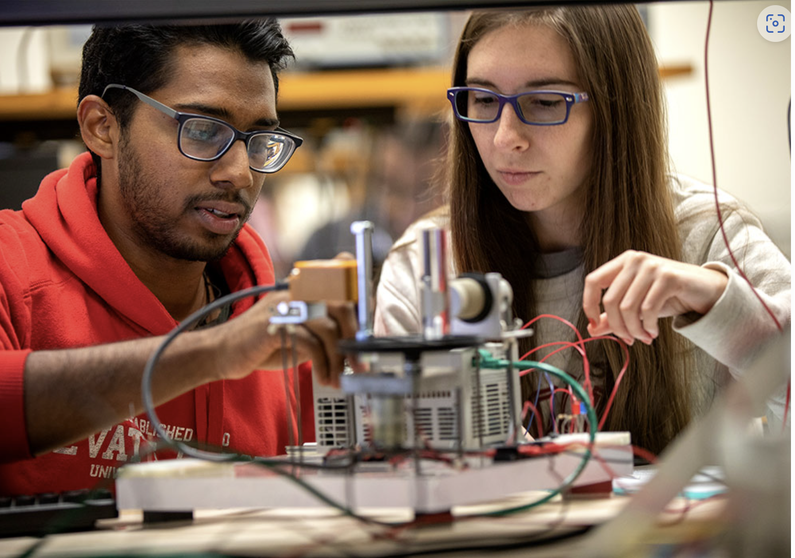
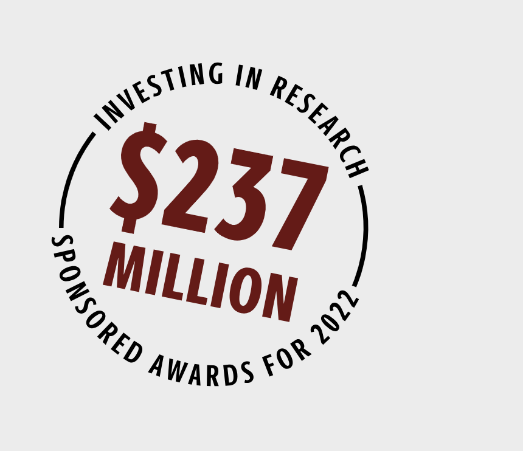

RESEARCH AT SOUTH CAROLINA
Research is a learning tool of the highest order at the University of South Carolina. Discovery allows us to illuminate history, contextualize the present, and help plan for what’s to come. Scientific research, scholarship and creative activity abound throughout USC. That focused presence within nearly all colleges, departments and campuses of the state’s flagship university is one reason Carnegie Foundation has designated South Carolina as an institution of very high research activity.
REMARKABLE RESEARCH AT USC
The University of South Carolina is the state’s most comprehensive health sciences research and teaching institution. Our researchers are working to solve some of the Palmetto State’s biggest health issues like stroke, autism and infectious diseases while preparing the next generation to tackle tomorrow’s challenges.
BUILT FOR OVERCOMING BARRIERS
The University of South Carolina is one of the nation’s leading, large-scale research enterprises. Within our campus centers, labs and collectives, students scour for answers alongside experienced faculty. Whether the challenge is formulating new ways to inspire healthier communities or developing new fuel cells, be part of addressing tomorrow’s challenges, today.
ACHIEVING NEW UNDERSTANDING
USC is home to world-class research and researchers. Get to know the university’s knowledge seekers and learn how their work generates innovation from arts and humanities to mathematics, engineering and the sciences.
BREAKTHROUGH FACULTY
Each year, the Office of the Vice President for Research honors university scholars with Breakthrough awards. The awards honor faculty researchers at two junctures: Breakthrough Leadership in Research for senior faculty or Breakthrough Stars for early career faculty.
INVESTING IN RESEARCH
USC generated $237 million in sponsored awards in 2022. Every investment in the pursuit of furthering knowledge helps us create an environment that supports the scholarly and creative activities of all faculty and students and provides the infrastructure necessary for a leading research university. See our funding in action.
THE LEADING EDGE OF HEALTH SCIENCES
USC is the state’s most comprehensive health sciences teaching and research institution. Nationally recognized programs in medicine, nursing, social work, public health, pharmacy, biochemistry, business, computing and others blend classroom learning and unique health care provider partnerships to create premier health sciences learning experiences for students.
Office of Vice President for Research
At our research-intensive university, a team is dedicated to supporting the entire spectrum of research and scholarly activities at USC, and assisting faculty and student researchers with every step in the research process.